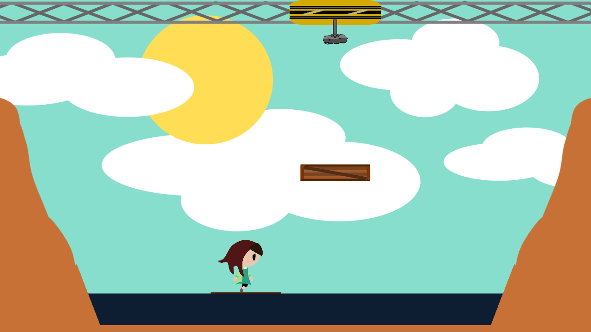

Mary is a young up-and-coming investigative journalist! She was looking into some shady dealings going on around a certain construction company, when the CEO had her thrown in a canyon set to flood and drown her! Take on the role of the crane operator who stumbled upon the helpless woman, and stack blocks to help save her from a watery grave!
Save Mary is a clone of the ultimately scrapped Atari game of the same name. I created it for a class in 2017 alongside a team. The other members were Sharlene Mendez, Nicole Griffin, Andrew Harding, Parker Wilson, and Nicholas Zonenberg.
I was tasked with programming the behavior of the blocks, the water, Mary's drowning state, and Mary's saved state / the win state. In addition, I also composed the background music.
The game was developed using the Unity engine, with C# as the scripting language.
